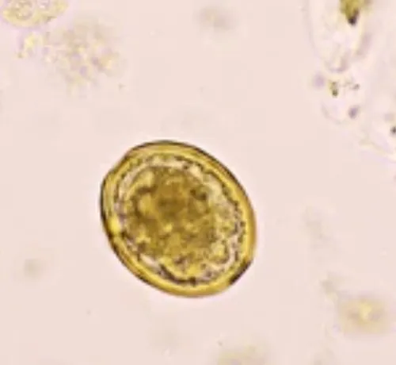

其他无脊椎动物 · 动物界
蛔虫 Ascaris lumbricoides

人体最常见的肠道寄生虫之一，成虫寄生在小肠，虫卵随粪便排出，经口感染，注意饮食卫生是预防关键。
- 分类
- 门线虫动物门纲色矛纲目蛔目科蛔科属蛔属
- 栖息环境
- 成虫寄生在人体小肠内，虫卵在温暖潮湿的土壤中发育
- 地理分布
- 全球分布，卫生条件较差的地区感染率较高
- 保护级别
- 暂无评估；重要肠道寄生虫
物种志
蛔虫成虫体形细长，两端尖，呈乳白或微黄色，雌虫长约 20–35 cm，雄虫约 15–25 cm，雄虫尾部卷曲。它寄生在人体小肠内，靠取食肠道内的半消化食物为生，虫体表面光滑，有横纹。
雌虫每天可产卵数十万粒，虫卵随粪便排出，在温暖潮湿的土壤中发育为含幼虫的感染性虫卵；人误食被虫卵污染的食物、水或蔬菜后感染，幼虫在体内移行经过肝、肺，再回到小肠发育为成虫。蛔虫病可引起腹痛、食欲异常、营养不良，大量虫体还可能造成肠梗阻。蛔虫感染在全球尤其是卫生条件较差的地区常见。预防的关键是饭前便后洗手、不喝生水、生吃瓜果要洗净去皮、粪便无害化处理，感染后可在医生指导下用药驱虫。
形态与习性
- 食性寄生在小肠内，取食半消化的食物
- 体长雌虫约 20–35 cm，雄虫约 15–25 cm
- 繁殖雌虫每天可产卵数十万粒
- 感染途径误食被虫卵污染的食物、水或蔬菜
- 危害腹痛、营养不良，大量感染可致肠梗阻
- 预防饭前便后洗手、不喝生水、瓜果洗净、粪便无害化处理
趣味知识
- 蛔虫雌虫一天能产下数十万粒虫卵，数量十分惊人。
- 虫卵在土壤中发育后经口进入人体，幼虫还会经过肺部移行。
- 饭前便后洗手、不生吃没洗的蔬菜，是预防蛔虫感染的关键。